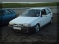
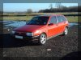
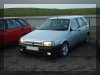
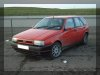
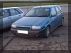
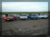
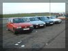

Santa Pod January 18th 2001
As we all know and love what Santa Pod is about, watching dragsters blast a ¼ mile
run in about 5 seconds, but on some days they do a RYWB session (Run What Ya Brung).
Unfortuantly the first time this was arranged, it tipped it down with rain and made it
a bit of a no go session. So the next RYWB session was planned for January 18th 2001.

Obviously on this day the weather God's were pleased as it was bright sunshine,
although a bit chilly. This allowed the session to go ahead. After a bit of
orgainsing with other Tipo members five managed to turn up
Alexis Grant,
Alex Wakefield,
Martin Hodges,
Ian Cull,
Antonio Damiano and
Nareman Virk (minus his car).

When we got there the strip wasn't open due to it being frozen, but they said it would
soon be ready to run, although only one lane. As soon as we got up there they started
running, so everyone went and queued up for their run, apart from Antz who was
playing it safe after having recently had another engine put in.

The idea was to time yourself using the "Christmas Tree" lights,
where the lights, start from the top and work their way down. Unfortunately for Ian,
this confused him a bit and resulted in a 5 second reaction time.

Everyone managed to get some good times in with Alex being the best at 16.563
and Nareman (using Martin's car) with nitrous running got 15.869, obviously showing
that nitrous makes a hell of a difference because no one got near that time!

There were some wierd and wonderful cars there, a MG Mastero turbo, that was
hurting every car it raced against, yes a MG Mastero even beat a Nissan Skyline
R33!!! A Renualt 5 on 18's, which didn't run, just a case of
show-and-dare-not-break-my-car and of course far too many Saxo's!

If you can't work out why some cars finish first with a slower top speed you have
to remember that it's a distance race not first to a given speed.
Imagine a car with low gearing, it will get to 60 relatively quickly but in
doing so won't have covered much ground. Compare to another car with
high gearing, it may take the same amount of time to get to 60 but it will
have travelled further down the strip. It's terminal velocity may not be
as high but it may well finish first.

Overall it was a good day and interesting to find out how the times of the car
differs with those of the journo test car's.